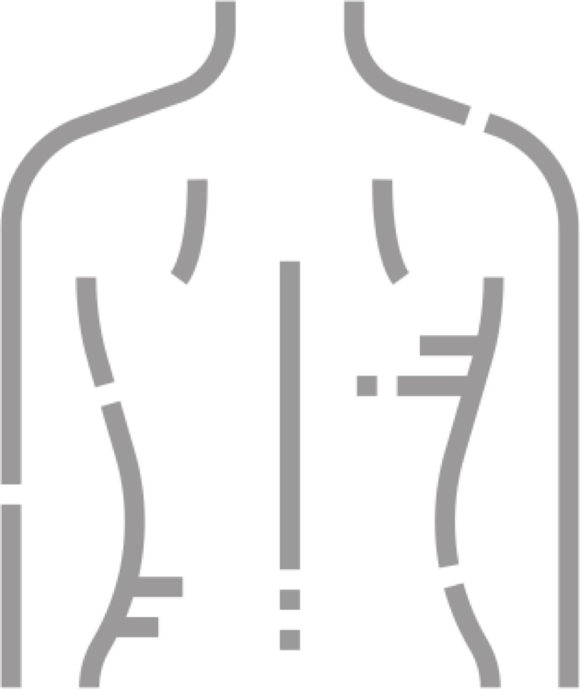

Gesicht
Klassische Gesichtsbehandlungen, Anti-Akne, Well-Aging, Microdermabrasion und Microneedling, LED-Lichttherapie und Vapozon.
Kosmetik und Fußpflege in Bielefeld, persönlich geführt von Katrin Hartig – seit 2006. Im November feiern wir Jubiläum.
Termin online buchen
Von der Gesichtsbehandlung bis zur Fußpflege: Jede Behandlung stimmen wir mit hochwertigen Produkten auf Sie und Ihre Haut ab – auch bei empfindlicher, zu Allergien neigender Haut.
Klassische Gesichtsbehandlungen, Anti-Akne, Well-Aging, Microdermabrasion und Microneedling, LED-Lichttherapie und Vapozon.

Fußpflege, Maniküre und Shellac für gepflegte Hände und Füße.


Körper & MassageMassagen und Rückenbehandlungen für Entspannung, die bis in den Alltag nachwirkt.
Wimpernverlängerung und -verdichtung, Lash- & Browlifting sowie kosmetisches Zahnbleaching.
Signature-Behandlungen
Unsere Well-Aging-Behandlung für reife Haut: aufbauende Pflege, sanfte Massage und ein Moment zum Durchatmen, nach dem die Haut sichtbar frischer wirkt.
Eine Gesichtsbehandlung, die sich an Ihrem Alltag orientiert: Wir klären, was Ihre Haut gerade braucht, und pflegen genau das – ohne Schnickschnack.
Gründliche Reinigung und Pflege für Männerhaut, entspannt und unkompliziert. Kosmetik gehört bei uns seit 2006 zu Sie und Ihn.
Unsere Geschichte
Pure Care beginnt: Kosmetik und Fußpflege in Bielefeld, persönlich von Katrin Hartig geführt.
Das Angebot wächst mit Ihren Wünschen: Microneedling, LED-Lichttherapie, Vapozon, Lash- & Browlifting und Zahnbleaching kommen dazu.
20 Jahre Pure Care. Wir feiern – und freuen uns auf Sie.
Technologien
Wir verwenden dermatologisch geprüfte Pflegeprodukte ohne chemische Konservierungsstoffe, Mineralöle sowie Duft- und Parfümstoffe. Die Geräte ergänzen die Handarbeit, sie ersetzen sie nicht.

Über Katrin Hartig
Seit 2006 führt Katrin Hartig Pure Care persönlich. Jeder Mensch ist einzigartig, deshalb stimmen wir jede Behandlung auf Ihre Haut und Ihre Wünsche ab.
Bei ruhiger Musik abschalten oder bei einem Getränk plaudern: Bei uns findet jeder, was ihm gut tut. Für alle, die gemeinsam entspannen möchten, gibt es unseren Paarraum.
Bewertungen
„Ich komme seit Jahren zu Katrin und fühle mich jedes Mal rundum gut aufgehoben. Die Haut dankt es.“
„Ruhige Atmosphäre, nimmt sich Zeit und erklärt alles. Meine Fußpflege ist hier in den besten Händen.“
„Ein Gutschein war das beste Geschenk für meine Mutter. Sie schwärmt heute noch davon.“
Gutscheine
Mit einem Pure-Care-Gutschein schenken Sie eine Auszeit, die der oder die Beschenkte selbst einlösen kann – in unserem Shop bestellt und im Handumdrehen verschenkt.
Seminare
Wir geben unsere Erfahrung auch in Seminaren weiter. Aktuelle Termine und Themen finden Sie auf unserer Seminarseite.
Kontakt & Anfahrt
Wir arbeiten mit